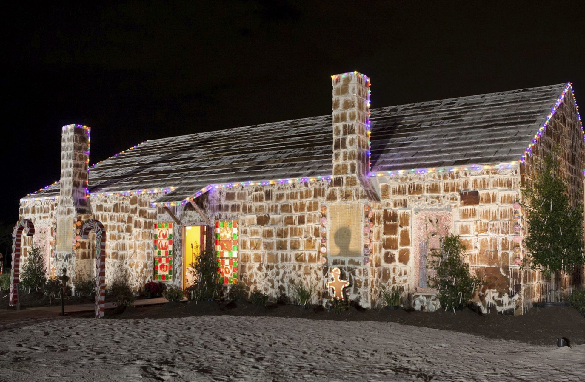
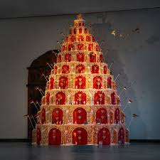

Ett pepparkakshus är en byggnad gjord av pepparkaksplattor som sätts ihop med smält socker eller kristyr. Det dekoreras ofta med godis, glasyr och florsocker för att likna ett snöigt vinterhus. Att bygga pepparkakshus är en populär och kreativ jultradition som både barn och vuxna brukar uppskatta.

